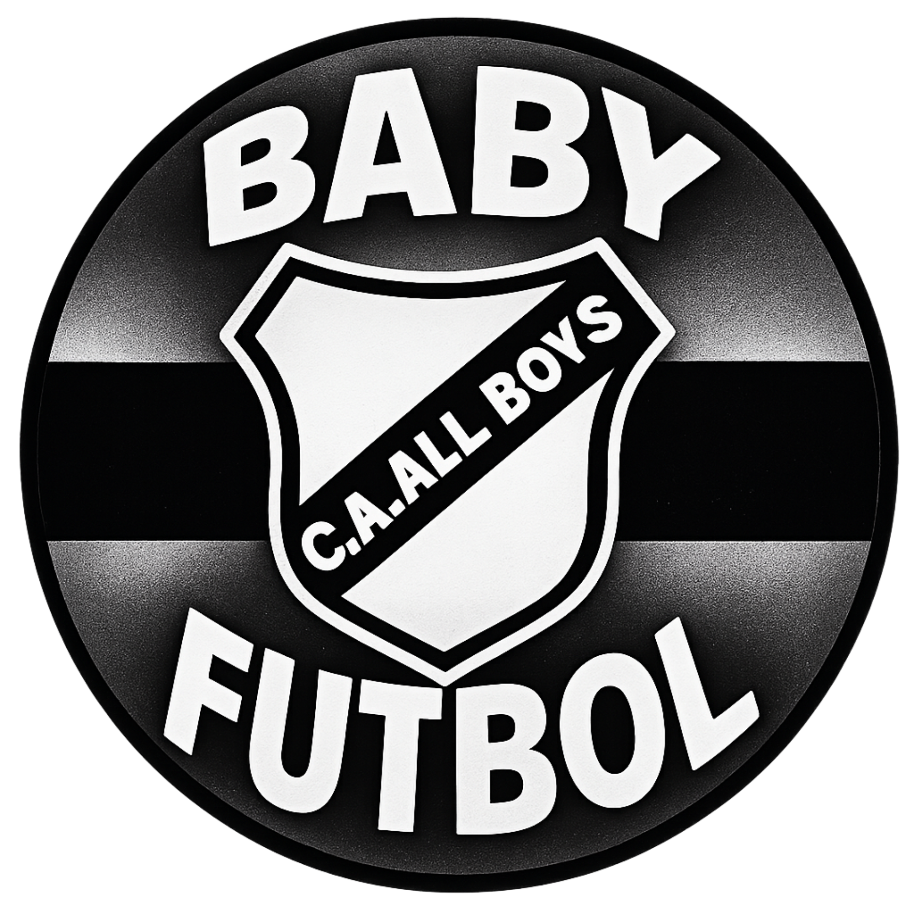

Los horarios y avisos pueden cambiar. Confirmá la información con el club antes de acercarte.
Los puntos y posiciones se muestran tal como figuran en la fuente. El ranking de goles incluye únicamente marcadores numéricos.